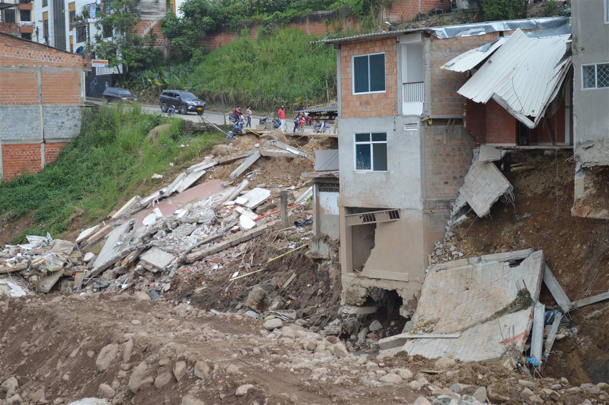

Acompanhamento Local de Emergências e Riscos Ambientais
O alerta de chuva com o nome da sua rua, no seu WhatsApp
A ALERA cruza a previsão do tempo com as áreas de risco de Juiz de Fora e avisa você antes da água subir ou do barranco ceder. ALERA no lugar certo, na hora certa.

Imagem ilustrativa: a foto não é de Juiz de Fora, é só um exemplo.
O problema
Fevereiro de 2026 foi o pior verão da história recente de Juiz de Fora (MG).
- 65 mortes em Juiz de Fora nas chuvas de fevereiro Polícia Civil, via DGABC
- 8.854 pessoas desabrigadas ou desalojadas Prefeitura, via Agência Pública
- 128 mil pessoas vivem em áreas de risco Cemaden, via Estado de Minas
- 142 áreas de risco geológico mapeadas Tribuna de Minas, fev. 2024
- 250 t de lixo tiradas dos bueiros de janeiro a novembro de 2025 Prefeitura, via Acessa.com
O alerta que existe hoje vale para a cidade toda. Ele não diz qual rua ou qual encosta corre risco, e quando todo aviso parece igual, ninguém sai de casa.
Fase 1
ALERA Web
Começa sem instalar nada: só o seu celular.
Como funciona
-
Cadastre sua rua
Informe seu telefone e a rua onde você mora.
-
A IA acompanha o clima
A ALERA cruza a previsão de chuva com as 142 áreas de risco da cidade.
-
O alerta chega no WhatsApp
Com o nome da sua rua, o nível de risco, o que fazer e o abrigo mais próximo.
Exemplo de alerta
ALERTARua das Acácias, Jardim Parque Burnier: previsão de 60 mm nas próximas 24 h. Fique atento e veja o abrigo mais próximo.
Os 4 níveis de risco
- NORMAL Sem chuva forte prevista.
- ATENÇÃO Previsão de 30 mm ou mais em 24 h.
- ALERTA Previsão de 50 mm ou mais em 24 h.
- PERIGO Alerta oficial da Defesa Civil para a área: saia de casa.
Gamificação
Cuidar da rua vira missão. Cada missão vale pontos para você e para a sua rua.
-
Limpar o bueiro
Tire o lixo da boca de lobo da sua rua.
+50 pontos -
Reportar lixo
Avise onde tem lixo acumulado ou bueiro entupido.
+20 pontos -
Plantar uma muda na encosta
Raízes ajudam a segurar o solo do barranco.
+80 pontos -
Salvar seu abrigo
Deixe o abrigo mais próximo salvo no celular.
+10 pontos
Ranking por rua
- Rua das Acácias 1.240 pts
- Rua dos Ipês 980 pts
- Rua das Palmeiras 760 pts
Valores simulados: os pontos das missões e o ranking são exemplos.
Fase 2
Gadgets ALERA
Os gadgets entram aos poucos, área por área. O dado medido entra no mesmo alerta do WhatsApp do morador, e os gadgets também enviam notificações para a Defesa Civil e para a Secretaria de Obras de Juiz de Fora.
-
Sensor ALERA
Fica na encosta e mede o risco ali mesmo, antes da terra descer.
O que mede
- Umidade do solo sensor capacitivo, em %
- Pluviômetro chuva acumulada em 24 h e 72 h
- Acelerômetro MPU-6050 detecta se o terreno inclinou
ESP32 compara as medidas com os limites e define o nível de alertaComo avisa
- LEDs na rua verde, amarelo e vermelho, sem internet
- Sirene toca no nível de perigo
- WhatsApp o aviso da Fase 1, também para Defesa Civil e Obras
Limites de cada nível
- NORMAL tudo abaixo dos limites
- ATENÇÃO umidade ≥ 60% ou 30 mm em 24 h
- ALERTA umidade ≥ 80% ou 50 mm em 24 h
- PERIGO terreno inclinou ≥ 2°: sair de casa
-
Bueiro ALERA
Um cesto segura o lixo e o sensor avisa a Secretaria de Obras quando é hora de limpar.
- Sensor ultrassônico: mede a altura do lixo e da água
- Cesto de tela: segura o lixo antes da galeria
- Chave boia: dispara se a água subir demais
- ESP32: lê os sensores e envia o aviso
- Notifica a Secretaria de Obras para limpar antes da chuva
- Notifica a Defesa Civil se o bueiro entupir
Quem somos
Somos os MonkeyNerds.
- Daniel Souza Gomes RM 575813
- Victor Santos Ferreira de Morais RM 575508
- Diego Ramos Pereira Gonzalez RM 574620
- Diego Alejandro Ribeiro Olalla RM 575447